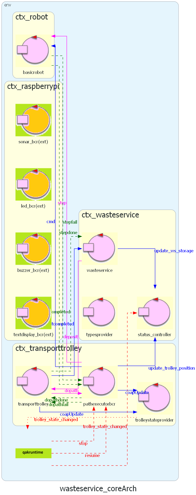
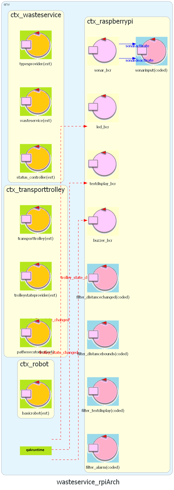

Project
The project contains all the software out team developed to achieve the Sprint3 SCRUM goal. We divided our work in 2 sub-sprints:- Sprint3.1 WasteService Core;
- Sprint3.2 WasteService GUI;
Logical Architecture
-
WasteService Core  QAK model: wasteservice_core.qak
-
WasteService RPi  QAK model: wasteservice_rpi.qak
Sprint3.1: WasteService Core
We upgraded theActors Changed
WasteService
The WasteService actor already keeps track of the current state of the containers. Therefore, we updated the state that occurs when a deposit action is completed (after the TransportTrolley quits the DUMP state) by making it forward to the StatusController the curret state of the container that has changed.
State state_deposit_completed {
// Update the actual storage counter
[#
WasteService.addToStorage(RequestedWasteType, RequestedWasteWeight)
WaitingDeposit = false
val CurrAmount = WasteService.getCurrentStorageForWasteType(RequestedWasteType)
#]
// Update Storage
forward status_controller -m update_ws_storage: update_ws_storage($RequestedWasteType, $CurrAmount)
}
Goto state_idle
PathExecutorBCR
As discussed during the Problem Analysis, the only actor that knows the actual position of the robot in the room is the PathExecutorBCR. Therefore, we edited the state that updates the map and from there we forward the current new position to the StatusController.
State state_do_move {
[#
plannerBCR.updateMap(CurMoveTodo, "")
#]
delay 350
// Update Trolley Position
[#
val X = plannerBCR.get_curPos().first
val Y = plannerBCR.get_curPos().second
#]
forward status_controller -m update_trolley_position: update_trolley_position($X, $Y)
}
Goto state_do_move_forward if [# CurMoveTodo == "w" #] else state_do_move_turn
TrolleyStateProvider
Since we already modeled this actor so that it propagates the current state of the TransportTrolley to the entire system by the use of an event, we didn't have to make any changes to it: we just needed to add a new guard to handle it, inside the StatusController.New Actor
StatusController
To update the GUI we introduced a new actor called "StatusController" in WasteService Context, whose purpose is to receive updates about some components and propagate the new status of the system to the GUI.In particular, it remains idle until it receives an update from any part of the system. When the change is detected, it updates the current status and subsequently sends it to the GUI. We also introduced a new message
get_data(_)
that directly triggers a GUI update.
State state_idle {
}
Transition t0 whenMsg update_ws_storage -> state_update_storage
whenEvent trolley_state_changed -> state_update_led
whenMsg update_trolley_position -> state_update_tt
whenMsg get_data -> state_update_gui
System Status
StatusUpdate
To keep track of the information about the system, we created a new classStatusUpdate.
This class represents a snapshot of the system in a certain instant of time.
Data Exchange
To send the StatusUpdate to the GUI, we decided to adopt JSON as a format. As per the MapEditor we used Gson library to parse the class into a JSON string: for this purpose we created a class StatusUpdateParser which exposes 2 static methods to obtain the StatusUpdate object from a JSON string, and viceversa.To send the updated status to the GUI, we used a CoAP message:
State state_update_gui {
println("[StatusController] Sent a new update for the GUI.")
updateResource [# wasteservice.gui.StatusUpdateParser.toJsonString(status) #]
}
Goto state_idle